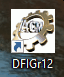
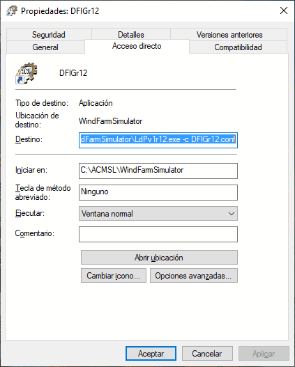

A veces es necesario ejecutar una aplicación indicándole un número de parámetros. Los accesos directos en el Escritorio de Windows permiten añadir parámetros a la invocación de un fichero ejecutable. Por ejemplo, el icono de la figura siguiente:

tiene las siguientes "propiedades" ("Explorer"-> click en el icono -> botón derecho):

donde se aprecia que este acceso directo tiene asociado la ejecución del comando
"C:\ACMSL\WindFarmSimulator\LdPv1r12.exe -c DFIGr12.conf",
que corresponde al ejecutable localizado en "C:\ACMSL\WindFarmSimulator\LdPv1r12.exe", y a dos parámetros: "-c" y "DFIGr12.conf".
Las Opciones del Organizador de Escritorio tienen también esa propiedad, asociada al concepto de "Comando". El Comando de una Opción puede ser:
- La ubicación de un fichero.
- La ubicación de un ejecutable, que puede requerir parámetros para su ejecución.
- Una dirección en Internet (URL).
En "Asociar parámetros al 'Comando' de una Opción" se presenta como especificar parámetros de un ejecutable.